Équipe SahelBridge
Dossier de conception R2 — 16 octobre 2026
Une plateforme de combat robotique basse, quatre roues entraînées par deux motoréducteurs et courroies, protections accessibles, fourches passives et méthode de validation par étapes.
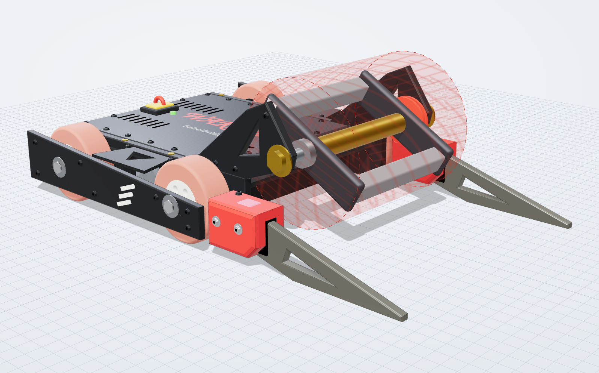
Règles publiées : Robots Battle, règlement, calendrier ; consultation 2026-10-16 23:28 GMT.
Le caisson noir bas porte un capot plat à dépose simple. Les flancs à trois stries blanches protègent quatre rouleaux Ø55 apparents. Deux motoréducteurs transmettent l’effort aux roues par courroies. Les arceaux triangulaires culminent à 95 mm ; des pods rouges soutiennent les fourches passives. Le pare-chocs bleu et le coupe-circuit amovible sont à l’arrière. Le module avant — enveloppe réservée — occupe un volume Ø96 × 112 mm ; sa définition attend l’encadrant.
| Élément | Cote R2 | Statut / portée |
|---|---|---|
| Hors tout | 334 × 217 × 110 mm | M · avec fourches et enveloppe avant |
| Sans fourches | 273 mm | M · jusqu’au volume avant |
| Caisse / arceaux | 44 / 95 mm | P / M · capot aplani en R2 |
| Roues / empattement / voie | Ø55 / 120 / 182 mm | Ø H ; implantation M/P |
| Module avant — enveloppe réservée | Ø96 × 112 mm · axe Z 62 | M · aucun organe défini |
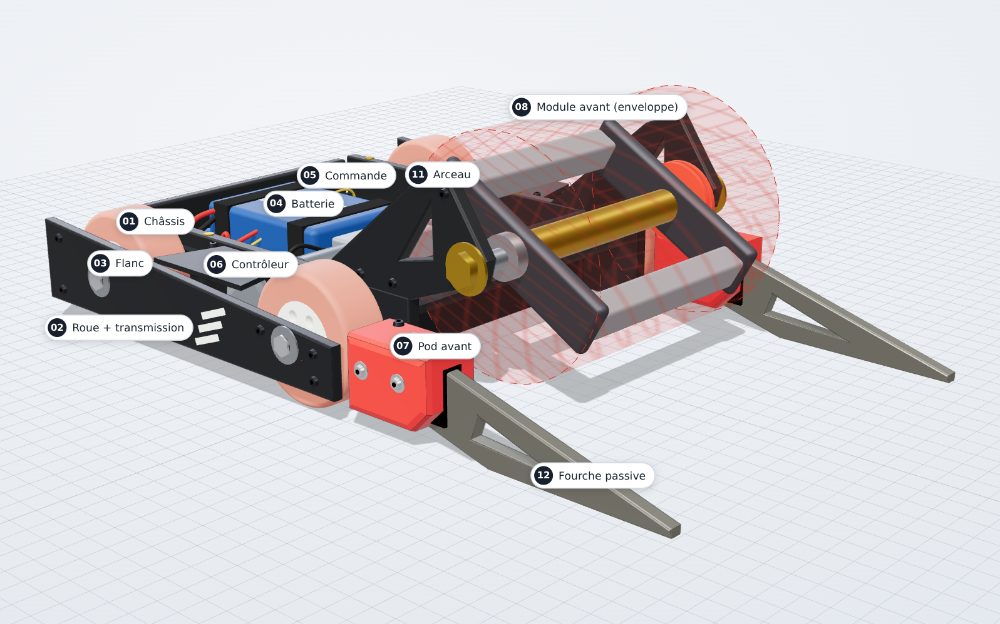
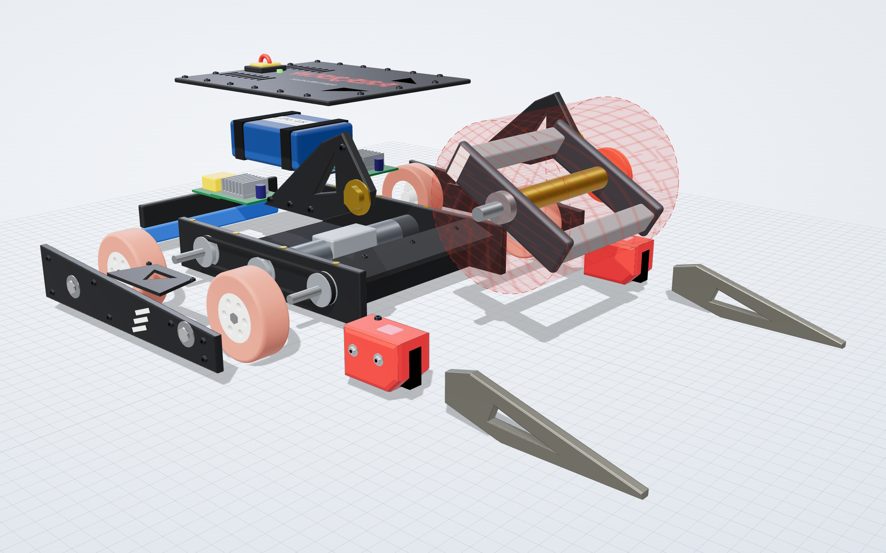
Les cotes forment une base commune aux vues, plans et tableaux ; elles doivent être contrôlées sur les composants reçus.
Le schéma fonctionnel montre une chaîne sectionnable et deux voies de traction : une par côté, un motoréducteur par voie. L’émetteur commande le récepteur ; une alimentation régulée sert la commande. Les protections, compatibilités et essais d’arrêt seront définis avec l’encadrant et les fiches du matériel.
À 18 A supposés, le pack 1,5 Ah donne 4 min avec 20 % de réserve ; le pack 2,2 Ah donne 5,87 min. Ces résultats sont des estimations, à confronter à V5.
Le budget est 3 850 g, dont 250 g de réserve. La marge budgétaire au plafond publié est 150 g. La configuration complète devra être pesée en V6.
Le schéma n’est pas un câblage. Aucun composant du kit ni aucune performance de commande n’est présumé.
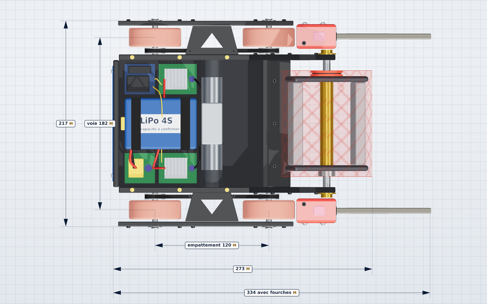
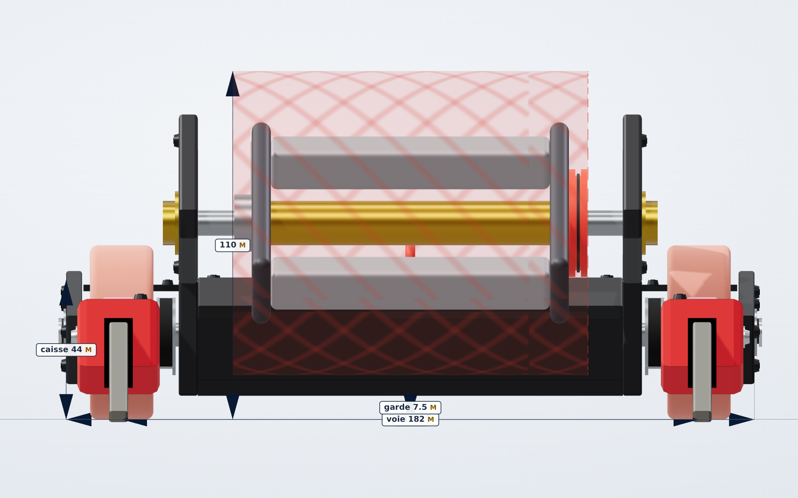
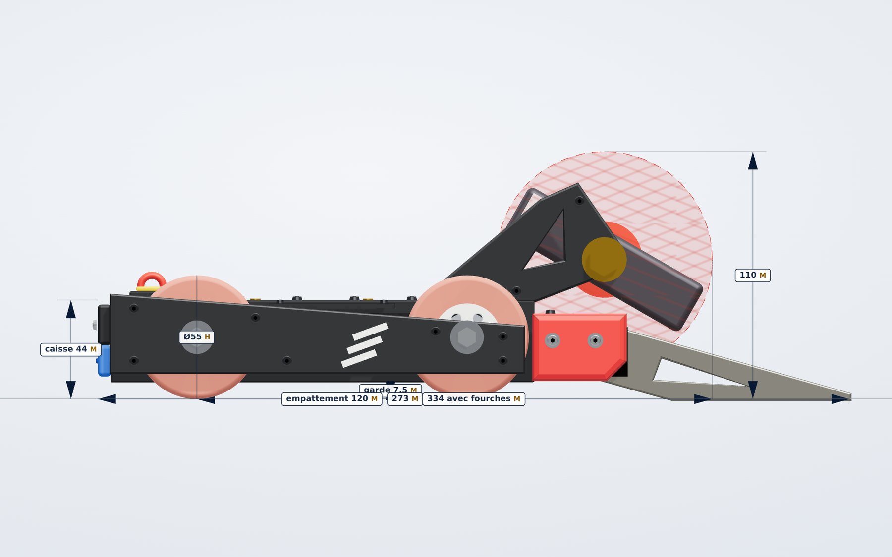
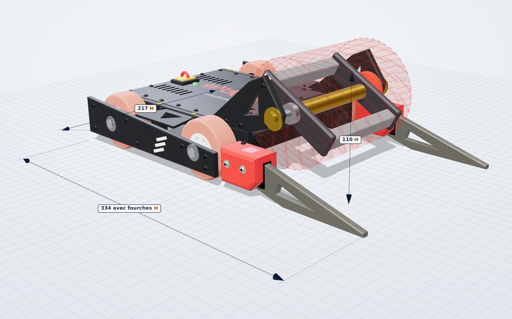
La maquette numérique 3D interactive est destinée à montrer successivement la perspective, le capot retiré, la vue éclatée et les cotes.
Les vues ci-dessous reprennent les cotes de la maquette. Elles servent à discuter l’encombrement, les repères et les accès. Le relevé du kit et les plans de fabrication restent à produire.
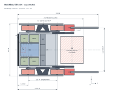
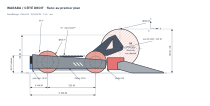
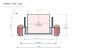
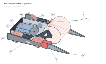
Repères : 01 châssis ; 02 propulsion ; 03 protections ; 04 batterie ; 05 commande ; 06 contrôleurs ; 07 pods ; 08 enveloppe réservée ; 09 coupe-circuit ; 10 capot ; 11 arceaux ; 12 fourches. La planche A3 prévue est également absente de cette copie.
Le premier jalon est l’inventaire du kit et des composants disponibles à Bamako. Plaques techniques, protections remplaçables, pièces de transmission, batterie, commande et chargeur seront retenus après comparaison de leur tenue, masse, compatibilité, prix documenté et délai. Une base de cotes unique alimente la maquette numérique 3D interactive, les plans et les tableaux.
Les règles publiées annoncent 4 kg maximum, un duel de 5 minutes et la sécurité obligatoire. Le contenu du kit, les dimensions maximales, les batteries admises et les mécanismes permis restent à demander. Les validations V1 à V6 sont prévues ; aucun prototype, essai, stock, pesée ou homologation n’est présenté comme acquis.
| Membre | Mission | Preuve proche |
|---|---|---|
| 1 | Coordination, règles, sécurité système | Fiche exigences et décisions V1/V3 |
| 2 | Mécanique, cotes, plans | Jeux et interfaces V2 |
| 3 | Intégration, fourches, module avant | Revue de sécurité, choix P3 |
| 4 | Traction, radio, pilotage | Commande V4 et autonomie V5 |
| 5 | Kit, devis, masse, dossier | Inventaire, grille FCFA, pesée V6 |
| Date | Décision ou preuve |
|---|---|
| 17 octobre | Échange avec DoniFab ; règles, kit et option avant. |
| 19–25 octobre | Inventaire, cotes, choix de structure ; V1 et V2. |
| 26 octobre–1er novembre | Revue électrique V3 puis assemblage si autorisé. |
| 2–6 novembre | Commande, durée, pesée ; V4 à V6 et corrections. |
| 7 novembre | Phase éliminatoire publiée. |
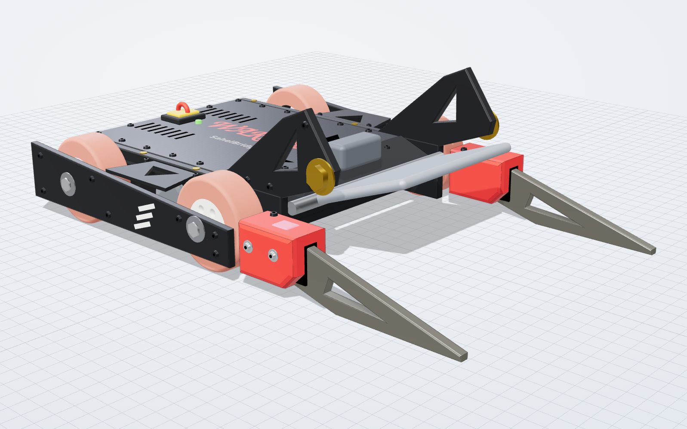
Règles publiées : Robots Battle, règlement, calendrier ; consultation 2026-10-16 23:28 GMT.